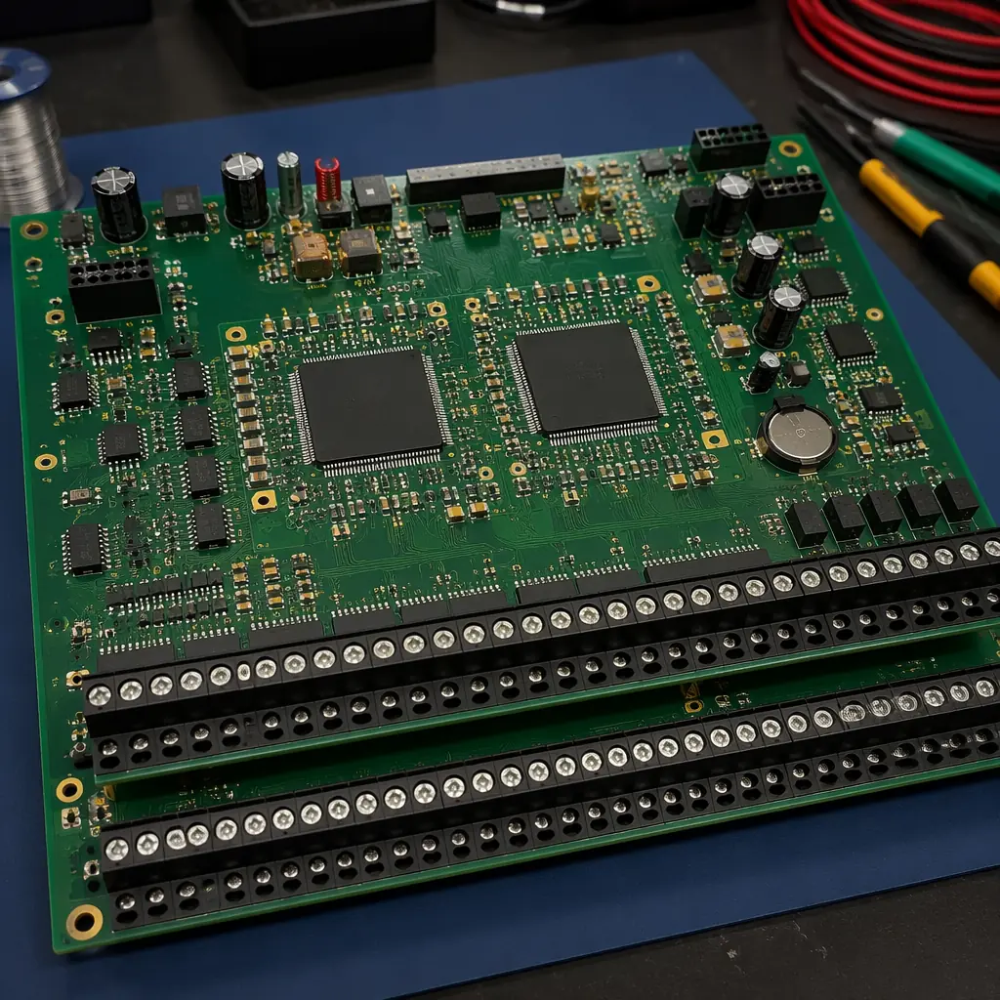
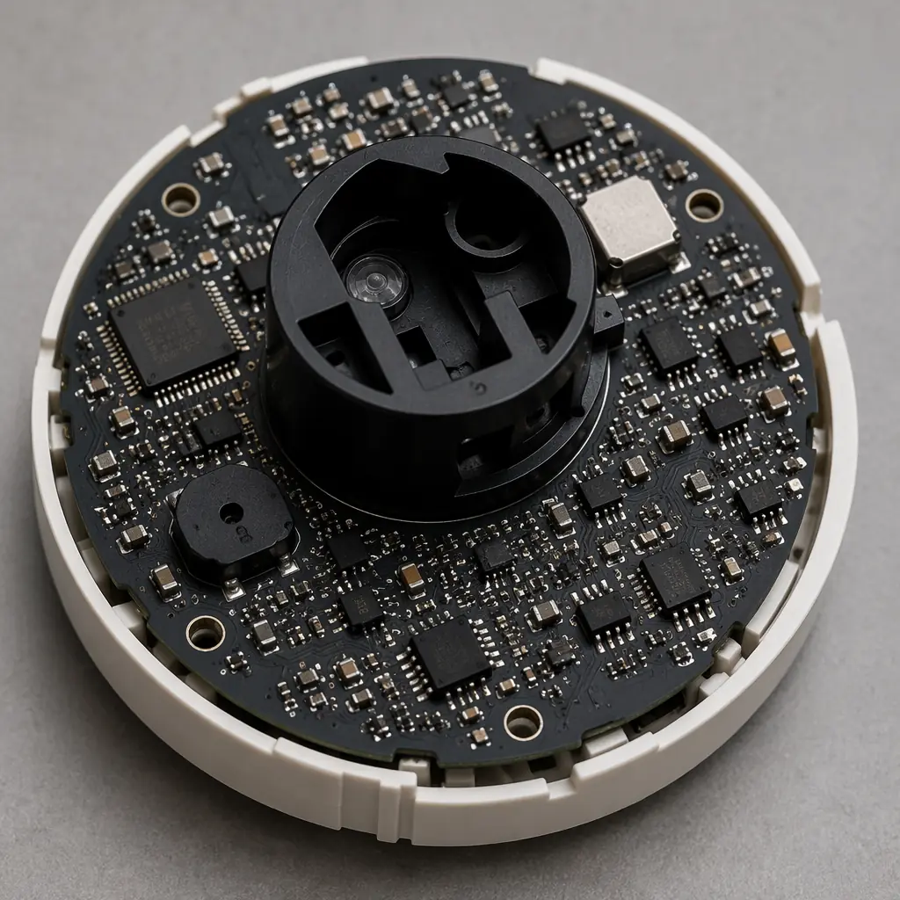

Fire alarm control panels, smoke detectors, heat sensors, and emergency voice evacuation systems share one non-negotiable requirement: the electronics must work when everything else is failing. A PCB inside a fire alarm panel may sit dormant for years — and then need to function perfectly at 65°C ambient temperature while the building fills with smoke. This isn't consumer electronics reliability. The manufacturing standards for life safety PCBs are fundamentally different from commercial or industrial electronics, and procurement managers who treat them the same way are taking on liability no insurance policy will fully cover.
At Huaxing PCBA, we manufacture fire safety system PCBs to the same process control standards we apply to IATF 16949 automotive and ISO 13485 medical device electronics — because the failure consequences in life safety are equally severe. Our IPC-A-610 Class 3 production line handles the redundant circuits, high-temperature laminates, and conformal coating requirements that define this sector.

UL 864 and EN 54: The Regulatory Framework That Drives PCB Design
Unlike most electronics where standards define minimum acceptable quality, life safety standards define what must be proven before a product can be legally installed. UL 864 (Standard for Control Units and Accessories for Fire Alarm Systems) in North America and EN 54 (Fire Detection and Fire Alarm Systems) in Europe are not optional certifications — they're legal requirements in most jurisdictions. Both standards impose specific PCB-level requirements that cascade directly into manufacturing specifications.
UL 864 10th Edition: Redundant Signal Paths on the PCB
UL 864 requires that no single component failure can disable the entire fire alarm system. On the PCB level, this translates to redundant microcontroller circuits with watchdog timers, separate power supply paths for notification appliance circuits (NACs), and isolated ground planes between primary and backup circuits. A PCB manufacturer unfamiliar with UL 864 may unknowingly merge ground planes that should remain separate — defeating the isolation that makes the redundancy meaningful. This is similar to the isolation requirements in high-voltage PCB design, but the motivation is fault tolerance rather than safety spacing.
EN 54 Part 2 and 4: Environmental Endurance Testing
EN 54 requires control and indicating equipment (CIE) and power supply equipment (PSE) to pass functional tests after environmental conditioning: cold (-10°C operational), damp heat (40°C at 93% RH for 21 days), and vibration. PCBs for EN 54 compliance need conformal coating as standard — not optional — to survive the damp heat test without dendritic growth between biased conductors. Our conformal coating guide covers the material selection decisions: acrylic for reworkability, silicone for extreme temperature range, or polyurethane for chemical resistance in industrial fire systems.
Power Supervision and Brownout Immunity
Fire alarm panels must detect and signal AC power loss within 10 seconds (UL 864) and continue operating on battery backup for 24 hours (standby) plus 5 minutes (alarm). The PCB's power management section must handle seamless switchover between mains and battery without resetting the processor — a design that demands careful power plane layout and capacitor selection. PCB stackup design with dedicated power and ground planes is essential here; two-layer boards will struggle with the required noise margins during switching transients.
Procurement Decision Point: When sourcing PCBs for UL 864 or EN 54 products, your manufacturer must understand that the certification applies to the finished product — but the PCB is the foundation. A manufacturer who asks "what IPC class do you want?" without asking which regulatory standard the product targets may not appreciate the difference between a commercial PCB and a life safety PCB. Choose a supplier with documented experience in regulated industries.
PCB Materials for High-Temperature Survival
A fire alarm panel installed in a factory ceiling or boiler room may see ambient temperatures of 50-60°C during normal operation — and must continue functioning at far higher temperatures during an actual fire event. Standard FR-4 with a Tg of 130°C is insufficient. High-Tg FR-4 (Tg ≥170°C) is the minimum; for detectors and sensors located in ceiling voids where temperatures rise fastest, polyimide or ceramic-substrate PCBs may be necessary.

Laminate Selection: Tg and Td Both Matter
Glass transition temperature (Tg) is the temperature where the resin softens — above Tg, the Z-axis CTE increases dramatically, risking barrel cracking in plated through-holes. Decomposition temperature (Td) is where the material begins to chemically break down. For life safety PCBs, specify High-Tg FR-4 (Tg 170-180°C, Td >325°C) as the minimum. For detector heads or ceiling-mounted devices, consider polyimide (Tg >250°C). See our PCB materials selection guide for a detailed laminate comparison across FR-4, high-Tg, Rogers, and specialty substrates.
Copper Weight and Thermal Relief Design
Notification appliance circuits (NACs) in fire alarm panels deliver significant current to drive strobes and horns — typically 2-3A per circuit, with panels supporting 4-8 circuits. These traces need 2oz copper as a baseline, with thermal relief pads on through-hole connectors to prevent soldering defects during assembly. For panels that drive voice evacuation speakers, the audio amplifier section may require heavy copper PCB techniques with 3-4oz copper on power stages to handle sustained current without excessive temperature rise.
Design Rules for Fail-Safe Operation
Life safety PCBs don't just need to work — they need to detect their own failures. A fire alarm panel that has lost its primary processor must still activate alarms through the backup path. This drives specific PCB design rules that differ significantly from commercial electronics.
Galvanic Isolation Between Primary and Backup Circuits
When a short circuit on the primary microcontroller rail could pull down the backup processor supply, that defeats the purpose of redundancy. Life safety PCBs require physical separation of redundant circuit sections — not just on the schematic but in the PCB layout. This means separate ground pours with defined isolation boundaries, optocoupler or digital isolator interfaces between domains, and clearance distances that exceed standard IPC requirements. EMC design rules must be applied without compromising the isolation requirements — a challenging balance that demands experienced layout engineering.
Supervisory Circuit Traces: Current-Limited and Monitored
Initiating device circuits (IDCs) that connect smoke detectors to the panel carry a small supervisory current — typically 2-5mA — even when no alarm is active. The panel monitors this current continuously. An open circuit (broken wire) or short circuit must be detected within 200 seconds per UL 864. On the PCB, this means the supervisory input section needs precision current-sensing resistors (1% tolerance or better), protection diodes against field wiring faults, and ground-referenced ADC inputs. IPC-A-610 vs J-STD-001 standards both apply here — the assembly workmanship standard and the soldering standard must both be Class 3 for these critical circuits.
Connector Selection: Screw Terminals Need Robust Pad Design
Fire alarm panels use terminal blocks for field wiring — typically 18-12 AWG screw terminals that experience mechanical stress during installation and thermal cycling across decades of service. The PCB pads for these connectors need enlarged annular rings (minimum 0.25mm beyond the hole diameter), teardrop reinforcement at pad-to-trace junctions, and 2oz copper to resist pad lifting. This is one area where on-site supplier audits reveal significant differences between manufacturers — inspect the terminal block soldering quality and pad design under magnification.
| Requirement | Commercial Fire Panel | Industrial Fire Panel | Detector/Sensor Head |
|---|---|---|---|
| Laminate | High-Tg FR-4 (Tg 170) | High-Tg FR-4 or Polyimide | Polyimide or Ceramic |
| Copper Weight | 1oz signal / 2oz power | 2oz signal / 3-4oz power | 1oz (compact design) |
| Layer Count | 4-6 layers | 6-10 layers | 2-4 layers |
| Conformal Coating | Acrylic (AR) | Silicone (SR) or Parylene | Silicone (SR) |
| Surface Finish | ENIG | ENIG or ENEPIG | ENIG |
| IPC Class | Class 2 minimum | Class 3 | Class 3 |
| Test Protocol | Flying probe + ICT | Flying probe + ICT + burn-in | Flying probe + functional |
| Regulatory Standard | UL 864 / EN 54-2 | UL 864 + FM Approved | UL 268 / EN 54-7 |
Why Fire Safety Electronics Demand a Different Manufacturing Mindset
The difference between a commercial PCB and a life safety PCB isn't visible in a photograph — it's in the process controls, material traceability, and testing protocols that ensure every board shipped meets the standard. Here's what separates life safety manufacturing from standard production:
100% Burn-In Testing Is Not Optional
UL 864 and EN 54 require demonstrated reliability, not just functional testing. For the PCB assembly, this means powered burn-in testing at elevated temperature (typically 50-55°C for 24-48 hours) to precipitate infant mortality failures before the boards are integrated into panels. A manufacturer who ships boards after only room-temperature functional test is not meeting the spirit of life safety standards. See our burn-in and ESS testing guide for protocols and equipment requirements.
Lot Traceability With 10+ Year Record Retention
Fire alarm panels remain in service for 15-25 years. When a panel failure occurs in year 18 — potentially after a real fire event — the manufacturer must be able to trace every component on that specific PCB back to its date code, reel, and supplier lot. IPC-1782 traceability is not a nice-to-have; it's a legal requirement for post-incident investigation. Our PCB lot traceability guide covers the marking technologies and database systems that make this feasible at production scale.
What This Means for Your Next Fire Safety PCB Order
Life safety electronics manufacturing is not a commodity service. The PCB manufacturer who builds your consumer IoT boards may not have the process discipline, test equipment, or regulatory knowledge to build fire alarm panels. When evaluating suppliers, ask about their experience with UL-listed products, their burn-in test capabilities, and whether they maintain IPC-A-610 Class 3 certification on their production lines. At Huaxing PCBA, our IATF 16949-certified quality system — originally built for automotive safety electronics — applies the same failure-prevention discipline to fire safety PCBs. Every board shipped includes full material traceability, conformal coating inspection reports, and burn-in test records. Contact our engineering team with your UL 864 or EN 54 product specifications for a manufacturing assessment.